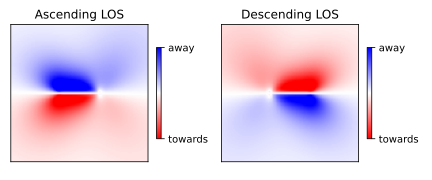
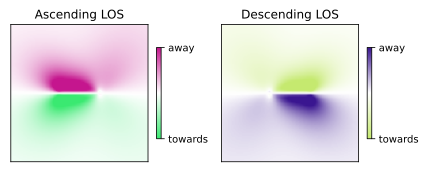
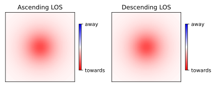
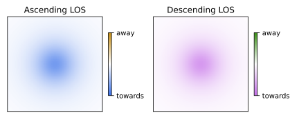

Usage
Use the Satellite Heading and Grazing Angle sliders to adjust the values for these parameters. The graphs will update, and colorbar below will display the color values for your specified satellite orientation. You can also select presets for Sentinel-1, horizontal, and vertical orientations.
The Why
When interpreting deformation measurements created using InSAR, it’s important to remember that the deformation measured is always along the SAR satellite’s line-of-sight. This means that two SAR satellites looking at the same deformation from different orientations will make different measurements of the deformation. When I work with people that are not SAR experts, this subtlety is often a source of confusion and we as a community of SAR experts do not do a great of job of making it easy for them to understand this concept.
Take for instance the standard way that InSAR results are visualized. For unwrapped interferograms, motion towards the satellite is portrayed as shades of red, and motion away from the satellite is portrayed as shades of blue. If you have InSAR data from an ascending and descending pass of the same satellite, and the motion is predominately horizontal, areas that are red in one image will be blue in the other. If you’re not paying attention to the line-of-sight information, it will look like the two InSAR images are describing very different motions!
Here is what this visualization problem looks like with a simple Okada strike-slip fault model, where the fault is oriented East-West:

We know that this visualization approach is ripe for misinterpretation, so why are we using it!? Are there better ways we could visualize the data?
How It Works
To solve this issue, I’d like to propose a new convention for visualizing InSAR deformation results that is codified in the app at the beginning of this post. This method alleviates many of the issues associated with the traditional approach while still producing beautiful maps. It does this by encoding information about the line-of-sight into the colorscheme!
A satellite’s line-of-sight can be described by a unit vector that has x, y and z components. Conveniently, digital colors are created by red, blue and green (RGB) components. What if we could define a relationship that would allow us to translate a satellite’s line-of-sight unit vector into a unique RGB color? This is exactly what this app accomplishes! The equation for making the transformation is:
Where x, y and z are the line-of-sight unit vector components, and RGB values are rounded to the nearest integer. You’ll notice that a unit vector of 0, 0, 0 maps to an RGB value of 128, 128, 128. This ensures that the full range of unit vector values [-1, 1] map to valid RGB values [0, 255]. Below is a visualization of the resulting color globe:
This visualization standard has a few key advantages:
- InSAR measurements with different line-of-sights are denoted by different colors, decreasing confusion.
- Colors denoting motion towards and away from a satellite are guaranteed to be complementary colors.
- Measurements from similar positions are similar colors.
- If the conversion equations above are known, an estimate the line-of-sight direction can be derived directly from an InSAR map.
Examples
Once again, here is the standard visualization of simple Okada strike-slip fault model, where the fault is oriented East-West:
And here is the same data visualized with the new colorscheme:

Notice how clear it is that the two line-of-sight measurements are communicating different information?
Now let’s look at a case where the two line-of-sight measurements are giving us similar information (i.e., where all of the motion is in the vertical direction). Here is the standard visualization for simple volcanic inflation approximated using a Mogi point source model:

Here, the deformation looks exactly the same, even though we know that the two line-of-sight datasets are measuring slightly different motions.
Here is the same Mogi point source model, but with the new visualization approach:

Here, the colorscheme makes it clear that we are measuring two similar quantities that are still slightly different - exactly what we would like to see!
Learn More
All the code used to create these tools can be found in this GitHub repository
Try it out and let me know what you think! You can find me on Twitter at @RS_Forrest, or on LinkedIn. I’ve included some presets in the app above so you can try out what Sentinel-1, vertical, and horizontal motion would like using this approach.